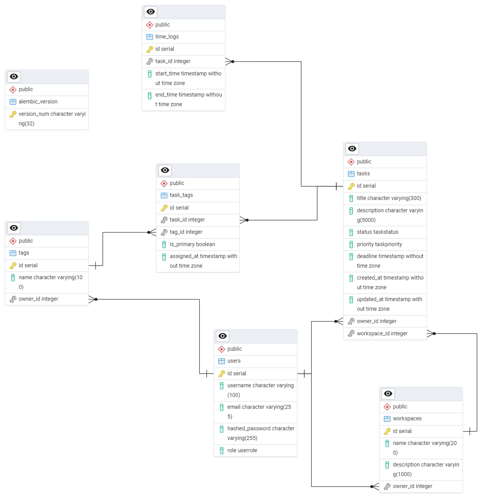

Отчёт по лабораторной работе №1
Реализация серверного приложения FastAPI
Цель работы
Научится реализовывать полноценное серверное приложение с помощью фреймворка FastAPI с применением дополнительных средств и библиотек.
Структура проекта
app/
├── core/
│ ├── database.py # Подключение к БД, сессии
│ ├── auth.py # JWT-аутентификация, зависимости
│ └── config.py # Настройки приложения
├── models/ # SQLModel-модели (таблицы БД)
│ ├── task.py
│ ├── task_tag.py
│ ├── tag.py
│ ├── workspace.py
│ ├── time_log.py
│ └── user.py
├── schemas/
│ ├── task.py
│ ├── task_tag.py
│ ├── tag.py
│ ├── workspace.py
│ ├── time_log.py
│ ├── user.py
│ └── analytics.py
├── routers/ # Эндпоинты API
│ ├── tasks.py
│ ├── tags.py
│ ├── workspaces.py
│ └── analytics.py
| └── auth.py
├── main.py # Точка входа, регистрация роутеров
└── alembic/ # Миграции БД
Подключение к базе данных
app/core/database.py
from sqlmodel import SQLModel, create_engine, Session
from app.core.config import get_settings
settings = get_settings()
engine = create_engine(settings.DATABASE_URL, echo=False)
def init_db():
SQLModel.metadata.create_all(engine)
def get_session():
with Session(engine) as session:
yield session
app/core/config.py
from pydantic_settings import BaseSettings
from functools import lru_cache
class Settings(BaseSettings):
DATABASE_URL: str
SECRET_KEY: str
ALGORITHM: str
ACCESS_TOKEN_EXPIRE_MINUTES: int
class Config:
env_file = ".env"
@lru_cache()
def get_settings() -> Settings:
return Settings()
Схема базы данных

Реализованные эндпоинты
Аутентификация и пользователи (/api/auth)
| Метод |
Путь |
Описание |
response_model |
Доступ |
POST |
/register |
Регистрация нового пользователя |
UserOut |
Публичный |
POST |
/login |
Вход в систему, получение JWT |
Token |
Публичный |
GET |
/me |
Данные текущего пользователя |
UserOut |
Авторизованный |
PUT |
/change-password |
Смена пароля текущего пользователя |
dict (200 OK) |
Авторизованный |
Задачи (/api/tasks)
| Метод |
Путь |
Описание |
response_model |
POST |
/ |
Создание задачи с тегами |
TaskOut |
GET |
/ |
Список задач с пагинацией и фильтрацией |
TaskListOut |
GET |
/{id} |
Получение задачи с вложенными данными |
TaskOut |
PATCH |
/{id} |
Частичное обновление задачи |
TaskOut |
DELETE |
/{id} |
Удаление задачи |
204 No Content |
POST |
/{id}/timer/start |
Запуск таймера учёта времени |
TimeLogRead |
POST |
/{id}/timer/pause |
Пауза таймера |
TimeLogRead |
POST |
/{id}/timer/stop |
Остановка таймера |
TimeLogRead |
GET |
/upcoming-deadlines/ |
Задачи с ближайшими дедлайнами |
TaskListOut |
| Метод |
Путь |
Описание |
response_model |
POST |
/ |
Создание тега |
TagRead |
GET |
/ |
Список тегов пользователя |
TagListOut |
GET |
/{id} |
Получение тега |
TagRead |
PUT |
/{id} |
Полное обновление тега |
TagRead |
DELETE |
/{id} |
Удаление тега |
204 No Content |
Рабочие пространства (/api/workspaces)
| Метод |
Путь |
Описание |
response_model |
POST |
/ |
Создание пространства |
WorkspaceRead |
GET |
/ |
Список пространств |
WorkspaceListOut |
GET |
/{id} |
Пространство с задачами |
WorkspaceWithTasksRead |
PATCH |
/{id} |
Обновление пространства |
WorkspaceRead |
DELETE |
/{id} |
Удаление пространства |
204 No Content |
Аналитика (/api/analytics)
| Метод |
Путь |
Описание |
response_model |
GET |
/total-time |
Общее время работы пользователя |
TotalTimeResponse |
GET |
/by-tag |
Время по тегам |
TagTimeResponse |
GET |
/by-workspace |
Время по рабочим пространствам |
WorkspaceTimeResponse |
GET |
/by-period |
Время за период |
PeriodTimeResponse |
GET |
/task/{id} |
Детализация времени по задаче |
TaskTimeResponse |
Аутентификация
- JWT-токены с алгоритмом HS256
- Зависимость
get_current_user для защиты эндпоинтов
- Изоляция данных: каждый пользователь видит только свои задачи, теги и пространства
- Валидация прав доступа при операциях с чужими ресурсами (возврат
403 Forbidden)
Миграции (Alembic)
Генерация миграции
alembic revision --autogenerate -m "add_tasks_table"
Применение миграций
alembic upgrade head # Применить все миграции
alembic downgrade -1 # Откатить последнюю
alembic current # Показать текущую версию
Запуск проекта
# 1. Установка зависимостей
pip install -r requirements.txt
# 2. Настройка переменных окружения
cp .env.example .env
# Отредактировать DATABASE_URL, SECRET_KEY
# 3. Применение миграций
alembic upgrade head
# 4. Запуск сервера
fastapi dev app/main.py
# или для продакшена:
uvicorn app.main:app --host 0.0.0.0 --port 8000